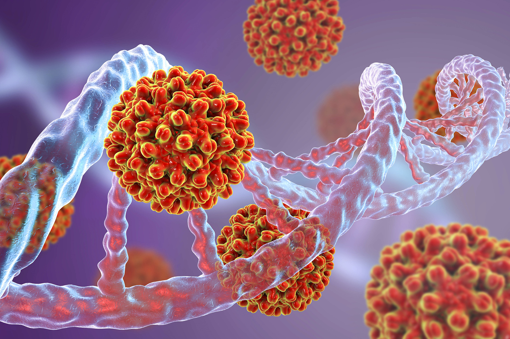

What is Hepatitis B?

Hepatitis B is an infection of your liver. It can cause scarring of the organ, liver failure, and cancer. It can be fatal if it isn’t treated. It’s spread when people come in contact with the blood, open sores,
or body fluids of someone who has the hepatitis B virus. It's serious, but if you get the disease as an adult, it shouldn’t last a long time. Your body fights it off within a few months, and you’re immune for the rest of your life.
That means you can't get it again. But if you get it at birth, it’ unlikely to go away.
What Are the Symptoms of Hepatitis B?
When you’re first infected, the warning signs include: Jaundice.- Your skin or the whites of the eyes turn yellow, and your pee turns brown or orange.) Light-colored poop Fever Fatigue that persists for weeks
or months Stomach trouble like loss of appetite, nausea, and vomiting Belly pain Symptoms may not show up until 1 to 6 months after you catch the virus. You might not feel anything. About a third of the people who have this disease
don’t. They only find out through a blood test.
How Do You Get Hepatitis B?
The most common ways to get hepatitis B include: Sex. You can get it if you have unprotected sex with someone who has it and your partner’s blood, saliva, semen, or vaginal secretions enter your body. Sharing
needles. The virus spreads easily via needles and syringes contaminated with infected blood. Accidental needle sticks. Health care workers and anyone else who comes in contact with human blood can get it this way. Mother to child.
Pregnant women with hepatitis B can pass it to their babies during childbirth. But there’s a vaccine to prevent newborns from becoming infected.
How Common Is Hepatitis B?
The number of people who get this disease is down, the CDC says. Rates have dropped from an average of 200,000 per year in the 1980s to around 20,000 in 2016. People between the ages of 20 and 49 are most likely
to get it. Only 5% to 10% of adults and children older than 5 who have hepatitis B end up with a chronic infection. The numbers aren’t so good for those younger than 5 (25% to 50%) and even higher for infants infected at birth (90%).
As many as 1.4 million people in the U.S. are carriers of the virus.
How Do You Prevent Hepatitis B From Spreading?
To help keep a hepatitis B infection from spreading: Get vaccinated (if you haven’t already been infected). Use condoms every time you have sex. Wear gloves when you clean up after others, especially if you have
to touch bandages, tampons, and linens. Cover all open cuts or wounds. Don’t share razors, toothbrushes, nail care tools, or pierced earrings with anyone. Don’t share chewing gum, and don’t pre-chew food for a baby. Make certain that
any needles for drugs, ear piercing, or tattoos -- or tools for manicures and pedicures -- are properly sterilized. Clean up blood with one part household bleach and 10 parts water.